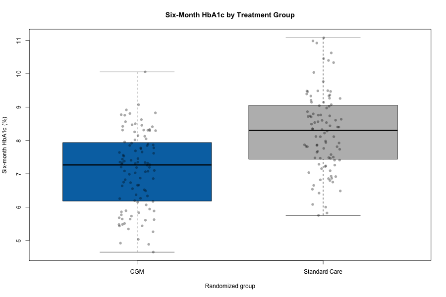

Question: Does CGM improve six-month HbA1c versus standard care?
Synthetic two-arm trial (N=200); ANCOVA adjusted for baseline HbA1c, age, and sex.
Adjusted Standard Care minus CGM difference: 0.76 HbA1c points (SE 0.07; p=3.15e-21).

Positive values favor CGM. These synthetic results demonstrate workflow only.